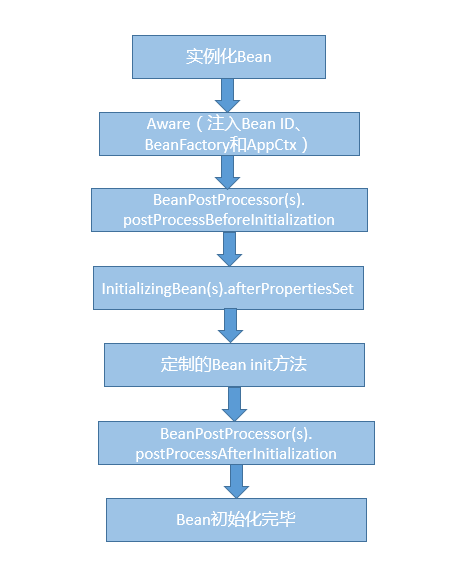
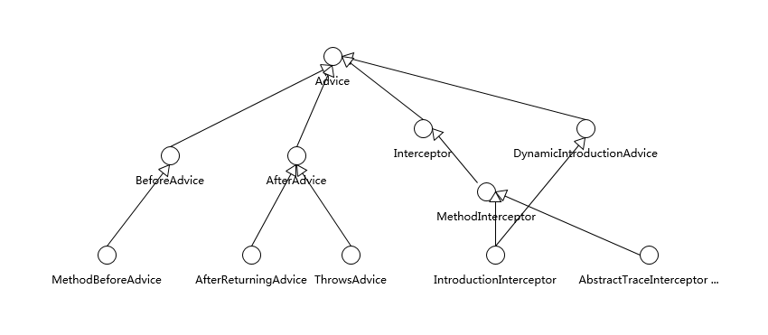
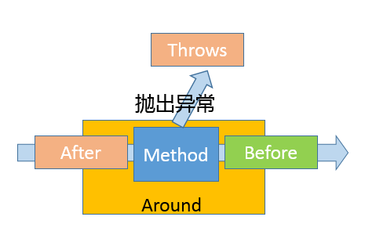
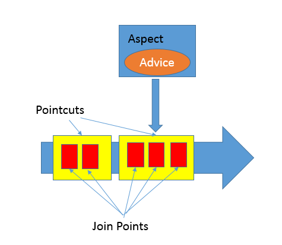

- 00 开篇词 以面试题为切入点，有效提升你的Java内功.md.html
- 01 谈谈你对Java平台的理解？.md.html
- 02 Exception和Error有什么区别？.md.html
- 03 谈谈final、finally、 finalize有什么不同？.md.html
- 04 强引用、软引用、弱引用、幻象引用有什么区别？.md.html
- 05 String、StringBuffer、StringBuilder有什么区别？.md.html
- 06 动态代理是基于什么原理？.md.html
- 07 int和Integer有什么区别？.md.html
- 08 对比Vector、ArrayList、LinkedList有何区别？.md.html
- 09 对比Hashtable、HashMap、TreeMap有什么不同？.md.html
- 10 如何保证集合是线程安全的_ ConcurrentHashMap如何实现高效地线程安全？.md.html
- 11 Java提供了哪些IO方式？ NIO如何实现多路复用？.md.html
- 12 Java有几种文件拷贝方式？哪一种最高效？.md.html
- 13 谈谈接口和抽象类有什么区别？.md.html
- 14 谈谈你知道的设计模式？.md.html
- 15 synchronized和ReentrantLock有什么区别呢？.md.html
- 16 synchronized底层如何实现？什么是锁的升级、降级？.md.html
- 17 一个线程两次调用start()方法会出现什么情况？.md.html
- 18 什么情况下Java程序会产生死锁？如何定位、修复？.md.html
- 19 Java并发包提供了哪些并发工具类？.md.html
- 20 并发包中的ConcurrentLinkedQueue和LinkedBlockingQueue有什么区别？.md.html
- 21 Java并发类库提供的线程池有哪几种？ 分别有什么特点？.md.html
- 22 AtomicInteger底层实现原理是什么？如何在自己的产品代码中应用CAS操作？.md.html
- 23 请介绍类加载过程，什么是双亲委派模型？.md.html
- 24 有哪些方法可以在运行时动态生成一个Java类？.md.html
- 25 谈谈JVM内存区域的划分，哪些区域可能发生OutOfMemoryError_.md.html
- 26 如何监控和诊断JVM堆内和堆外内存使用？.md.html
- 27 Java常见的垃圾收集器有哪些？.md.html
- 28 谈谈你的GC调优思路_.md.html
- 29 Java内存模型中的happen-before是什么？.md.html
- 30 Java程序运行在Docker等容器环境有哪些新问题？.md.html
- 31 你了解Java应用开发中的注入攻击吗？.md.html
- 32 如何写出安全的Java代码？.md.html
- 33 后台服务出现明显“变慢”，谈谈你的诊断思路？.md.html
- 34 有人说“Lambda能让Java程序慢30倍”，你怎么看？.md.html
- 35 JVM优化Java代码时都做了什么？.md.html
- 36 谈谈MySQL支持的事务隔离级别，以及悲观锁和乐观锁的原理和应用场景？.md.html
- 37 谈谈Spring Bean的生命周期和作用域？.md.html
- 38 对比Java标准NIO类库，你知道Netty是如何实现更高性能的吗？.md.html
- 39 谈谈常用的分布式ID的设计方案？Snowflake是否受冬令时切换影响？.md.html
- 周末福利 谈谈我对Java学习和面试的看法.md.html
- 结束语 技术没有终点.md.html
- 捐赠
37 谈谈Spring Bean的生命周期和作用域？
在企业应用软件开发中，Java是毫无争议的主流语言，开放的Java EE规范和强大的开源框架功不可没，其中Spring毫无疑问已经成为企业软件开发的事实标准之一。今天这一讲，我将补充Spring相关的典型面试问题，并谈谈其部分设计细节。
今天我要问你的问题是，谈谈Spring Bean的生命周期和作用域？
典型回答
Spring Bean生命周期比较复杂，可以分为创建和销毁两个过程。
首先，创建Bean会经过一系列的步骤，主要包括：
实例化Bean对象。
设置Bean属性。
如果我们通过各种Aware接口声明了依赖关系，则会注入Bean对容器基础设施层面的依赖。具体包括BeanNameAware、BeanFactoryAware和ApplicationContextAware，分别会注入Bean ID、Bean Factory或者ApplicationContext。
调用BeanPostProcessor的前置初始化方法postProcessBeforeInitialization。
如果实现了InitializingBean接口，则会调用afterPropertiesSet方法。
调用Bean自身定义的init方法。
调用BeanPostProcessor的后置初始化方法postProcessAfterInitialization。
创建过程完毕。
你可以参考下面示意图理解这个具体过程和先后顺序。- 
第二，Spring Bean的销毁过程会依次调用DisposableBean的destroy方法和Bean自身定制的destroy方法。
Spring Bean有五个作用域，其中最基础的有下面两种：
Singleton，这是Spring的默认作用域，也就是为每个IOC容器创建唯一的一个Bean实例。
Prototype，针对每个getBean请求，容器都会单独创建一个Bean实例。
从Bean的特点来看，Prototype适合有状态的Bean，而Singleton则更适合无状态的情况。另外，使用Prototype作用域需要经过仔细思考，毕竟频繁创建和销毁Bean是有明显开销的。
如果是Web容器，则支持另外三种作用域：
Request，为每个HTTP请求创建单独的Bean实例。
Session，很显然Bean实例的作用域是Session范围。
GlobalSession，用于Portlet容器，因为每个Portlet有单独的Session，GlobalSession提供一个全局性的HTTP Session。
考点分析
今天我选取的是一个入门性质的高频Spring面试题目，我认为相比于记忆题目典型回答里的细节步骤，理解和思考Bean生命周期所体现出来的Spring设计和机制更有意义。
你能看到，Bean的生命周期是完全被容器所管理的，从属性设置到各种依赖关系，都是容器负责注入，并进行各个阶段其他事宜的处理，Spring容器为应用开发者定义了清晰的生命周期沟通界面。
如果从具体API设计和使用技巧来看，还记得我在[专栏第13讲]提到过的Marker Interface吗，Aware接口就是个典型应用例子，Bean可以实现各种不同Aware的子接口，为容器以Callback形式注入依赖对象提供了统一入口。
言归正传，还是回到Spring的学习和面试。关于Spring，也许一整本书都无法完整涵盖其内容，专栏里我会有限地补充：
Spring的基础机制。
Spring框架的涵盖范围。
Spring AOP自身设计的一些细节，前面[第24讲]偏重于底层实现原理，这样还不够全面，毕竟不管是动态代理还是字节码操纵，都还只是基础，更需要Spring层面对切面编程的支持。
知识扩展
首先，我们先来看看Spring的基础机制，至少你需要理解下面两个基本方面。
- 控制反转（Inversion of Control），或者也叫依赖注入（Dependency Injection），广泛应用于Spring框架之中，可以有效地改善了模块之间的紧耦合问题。
从Bean创建过程可以看到，它的依赖关系都是由容器负责注入，具体实现方式包括带参数的构造函数、setter方法或者AutoWired方式实现。
- AOP，我们已经在前面接触过这种切面编程机制，Spring框架中的事务、安全、日志等功能都依赖于AOP技术，下面我会进一步介绍。
第二，Spring到底是指什么？
我前面谈到的Spring，其实是狭义的Spring Framework，其内部包含了依赖注入、事件机制等核心模块，也包括事务、O/R Mapping等功能组成的数据访问模块，以及Spring MVC等Web框架和其他基础组件。
广义上的Spring已经成为了一个庞大的生态系统，例如：
Spring Boot，通过整合通用实践，更加自动、智能的依赖管理等，Spring Boot提供了各种典型应用领域的快速开发基础，所以它是以应用为中心的一个框架集合。
Spring Cloud，可以看作是在Spring Boot基础上发展出的更加高层次的框架，它提供了构建分布式系统的通用模式，包含服务发现和服务注册、分布式配置管理、负载均衡、分布式诊断等各种子系统，可以简化微服务系统的构建。
当然，还有针对特定领域的Spring Security、Spring Data等。
上面的介绍比较笼统，针对这么多内容，如果将目标定得太过宽泛，可能就迷失在Spring生态之中，我建议还是深入你当前使用的模块，如Spring MVC。并且，从整体上把握主要前沿框架（如Spring Cloud）的应用范围和内部设计，至少要了解主要组件和具体用途，毕竟如何构建微服务等，已经逐渐成为Java应用开发面试的热点之一。
第三，我们来探讨一下更多有关Spring AOP自身设计和实现的细节。
先问一下自己，我们为什么需要切面编程呢？
切面编程落实到软件工程其实是为了更好地模块化，而不仅仅是为了减少重复代码。通过AOP等机制，我们可以把横跨多个不同模块的代码抽离出来，让模块本身变得更加内聚，进而业务开发者可以更加专注于业务逻辑本身。从迭代能力上来看，我们可以通过切面的方式进行修改或者新增功能，这种能力不管是在问题诊断还是产品能力扩展中，都非常有用。
在之前的分析中，我们已经分析了AOP Proxy的实现原理，简单回顾一下，它底层是基于JDK动态代理或者cglib字节码操纵等技术，运行时动态生成被调用类型的子类等，并实例化代理对象，实际的方法调用会被代理给相应的代理对象。但是，这并没有解释具体在AOP设计层面，什么是切面，如何定义切入点和切面行为呢？
Spring AOP引入了其他几个关键概念：
Aspect，通常叫作方面，它是跨不同Java类层面的横切性逻辑。在实现形式上，既可以是XML文件中配置的普通类，也可以在类代码中用“@Aspect”注解去声明。在运行时，Spring框架会创建类似Advisor来指代它，其内部会包括切入的时机（Pointcut）和切入的动作（Advice）。
Join Point，它是Aspect可以切入的特定点，在Spring里面只有方法可以作为Join Point。
Advice，它定义了切面中能够采取的动作。如果你去看Spring源码，就会发现Advice、Join Point并没有定义在Spring自己的命名空间里，这是因为他们是源自AOP联盟，可以看作是Java工程师在AOP层面沟通的通用规范。
Java核心类库中同样存在类似代码，例如Java 9中引入的Flow API就是Reactive Stream规范的最小子集，通过这种方式，可以保证不同产品直接的无缝沟通，促进了良好实践的推广。
具体的Spring Advice结构请参考下面的示意图。- 
其中，BeforeAdvice和AfterAdvice包括它们的子接口是最简单的实现。而Interceptor则是所谓的拦截器，用于拦截住方法（也包括构造器）调用事件，进而采取相应动作，所以Interceptor是覆盖住整个方法调用过程的Advice。通常将拦截器类型的Advice叫作Around，在代码中可以使用“@Around”来标记，或者在配置中使用“aop:around”。
如果从时序上来看，则可以参考下图，理解具体发生的时机。

- Pointcut，它负责具体定义Aspect被应用在哪些Join Point，可以通过指定具体的类名和方法名来实现，或者也可以使用正则表达式来定义条件。
你可以参看下面的示意图，来进一步理解上面这些抽象在逻辑上的意义。

Join Point仅仅是可利用的机会。
Pointcut是解决了切面编程中的Where问题，让程序可以知道哪些机会点可以应用某个切面动作。
而Advice则是明确了切面编程中的What，也就是做什么；同时通过指定Before、After或者Around，定义了When，也就是什么时候做。
在准备面试时，如果在实践中使用过AOP是最好的，否则你可以选择一个典型的AOP实例，理解具体的实现语法细节，因为在面试考察中也许会问到这些技术细节。
如果你有兴趣深入内部，最好可以结合Bean生命周期，理解Spring如何解析AOP相关的注解或者配置项，何时何地使用到动态代理等机制。为了避免被庞杂的源码弄晕，我建议你可以从比较精简的测试用例作为一个切入点，如CglibProxyTests。
另外，Spring框架本身功能点非常多，AOP并不是它所支持的唯一切面技术，它只能利用动态代理进行运行时编织，而不能进行编译期的静态编织或者类加载期编织。例如，在Java平台上，我们可以使用Java Agent技术，在类加载过程中对字节码进行操纵，比如修改或者替换方法实现等。在Spring体系中，如何做到类似功能呢？你可以使用AspectJ，它具有更加全面的能力，当然使用也更加复杂。
今天我从一个常见的Spring面试题开始，浅谈了Spring的基础机制，探讨了Spring生态范围，并且补充分析了部分AOP的设计细节，希望对你有所帮助。
一课一练
关于今天我们讨论的题目你做到心中有数了吗？今天的思考题是，请介绍一下Spring声明式事务的实现机制，可以考虑将具体过程画图。
请你在留言区写写你对这个问题的思考，我会选出经过认真思考的留言，送给你一份学习奖励礼券，欢迎你与我一起讨论。
你的朋友是不是也在准备面试呢？你可以“请朋友读”，把今天的题目分享给好友，或许你能帮到他。
© 2019 - 2023 Liangliang Lee. Powered by gin and hexo-theme-book.